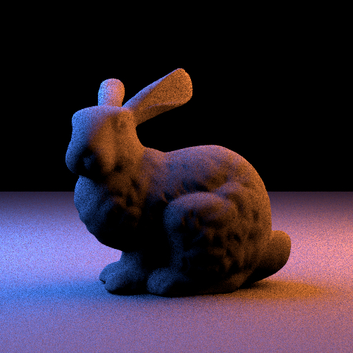
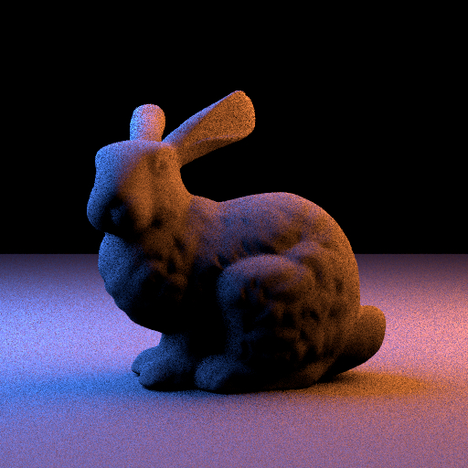
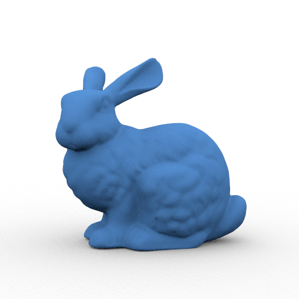
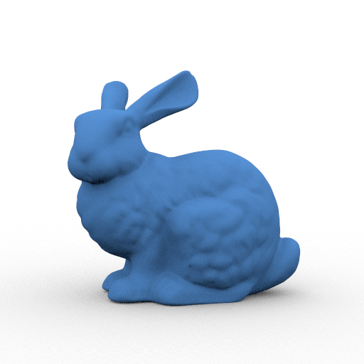

Hi, I’m Camilo Martínez, 7057573
or Dipplin for short
This is my submission for the Computer Graphics Rendering Competition WS2023/2024.
In the scene you see the 3 famous ships of Cristóbal Colón: "la Niña", "la Pinta" and "la Santa María". With this, a whole new world was discovered, only new to the foreigners at least, but some might say it was destroyed and re-built a new in the likes of its conquerors.

 



 

Every single image rendered with 128spp. The further improvement on the noise is not because of having done 128spp (all three images were rendered with the same spp's), but because of the Subtended-Cone Sampling!
I am Camilo Martínez, representative of the Dipplin council and a student of the Uni-Saarland currently on my 1st semester of the Masters degree in Data Science and Artificial Intelligence.